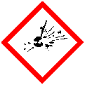
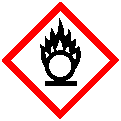
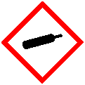
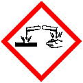
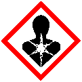
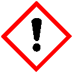

Exemple de consigne
Tester si des substances peuvent perturber les pistes des fourmis.
Les pictogrammes de sécurité
 Ça explose |
Ça prend feu |
 Ça fait brûler |
 Ça éclate fort |
 Ça ronge |
C'est toxique |
 Ça abîme le corps sur la durée |
 Ça rend malade |
C'est dangereux pour la nature |